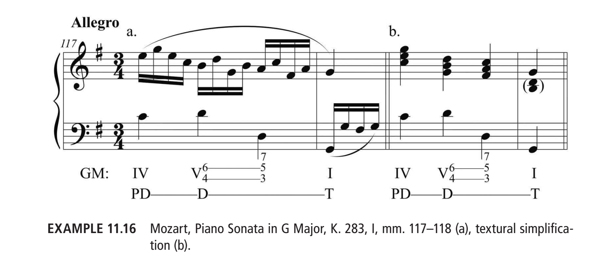

1. 第二转位
1. 第二转位
接下来是由低音声部演奏和弦五音（5th）的第二转位（四六和弦）。我们首先从声部配置（Voicing）谈起。

在第二转位中，低音与上方声部的根音必然构成四度音程（在古典和声中四度与低音构成时不协和），因此常被解释为和弦无法充分履行其固有独立功能的“非功能性”或装饰性存在[1]。
I级第二转位的用法（终止四六和弦）
在基础范围内，最经典的I²（主和弦第二转位 / $I^6_4$）用法，是置于V级和弦之前构筑起极其平稳的终止式（Cadence）。

如上谱所示，和声沿着 I² → V → I 流动。这种听感极具正统古典优等生的严谨端庄气质。它与现代流行乐中的 Vsus4 隐约有些接近，但两者似是而非、有着本质区别。

在 sus4 中叠置了四度音程，音响瞬间变得格外生硬坚挺。这听起来极具流行乐风味，却荡然无存了古典派特有的典雅韵律。这一细微差别至关重要。当然还可以有各种不同的排列组合，我们再来尝试高音声部位于“Mi”位置的模式：

这次采用了开放排列，并且融入了上一篇介绍的“重属和弦第一转位”。构筑出 Mi-Re-Do 这样纯美流畅的级进下行线条，也是极富代表性的经典套路。
关于I²的功能与理论解释
I²走向V是绝对的典型，堪称古典派中的核心“标准程式”。而且在此情境下，I²的和声功能通常被解释为属功能（Dominant）。《岛冈和声》中阐述道：“它与后继的V级和弦处于不可分割的一体关系，两者合二为一作为单个D功能和弦来处理”。否则，就根本无法合理解释如上例中从II级和弦或重属和弦直接进行到I级和弦的现象。甚至在某些理论专著中，连级数标记都不写为I，而是直接标为V。

摘自 Jason W. Solomon, 《Music Theory Essentials》 p.113这是用“数字低音（Figured Bass）”方式书写的和弦记号，通过在V的右侧并列标注 6 和 4（即 $V^6_4$ 或 $V^{6-5}_{4-3}$），表明五音与三音暂时被向上位移到了六度和四度。换言之，该流派的立场是：在这种固定程式中，I²的本质更接近于带有倚音的属和弦（类似于Vsus4的前身），绝不将其视为真正独立的主和弦（I）。
无论如何，这种 Sol-Do-Mi 构筑的和弦音响，成为了为古典派音乐奠定鲜明风格基调的核心标志之一。
IV级第二转位的用法（辅助四六和弦）
IV²的用法更为有限，在自然音阶和弦的连接中，它几乎纯粹只在 I → IV² → I 这一模式中出现。

这也就是所谓的作为主持续音（Tonic Pedal / 辅助四六和弦）的用法。
V级第二转位的用法（经过四六和弦）
V²在原则上也仅在低音形成“Do-Re-Mi”或“Mi-Re-Do”优美平滑级进的语境下使用。绝不会勉强将其连接到VI。

特别是当叠置到七音、九音时，各声部全都被限定进行音牢牢锁死，因此其前后连接必须具有高度严密的预先规划。正因为这种“单个和弦本身功能上的脆弱性与依赖性”，第二转位处于一种颇为特殊的地位：它极度依赖低音声部与前后和弦保持平滑级进连接或持续保留。在此我们仅以这三个主要三和弦的连接作为代表性介绍。
2. 第三转位
对于三和弦而言转位到第二转位就结束了，但对于七和弦而言，则可以构建由七音（7th）充当低音的第三转位（二和弦 / 4/2和弦）。在初级阶段所使用的七和弦主要是V7，因此我们仅聚焦于此。

在密集排列下的标准声部配置如上所示。各声部的分工极其明晰：低音负责七音（7th），上方三声部各自掌管根音、三音与五音。四部和声中四个音各司其职、不存在任何重复音，结构极为纯粹。
其用法也极其清晰明了：V7的解决去向唯有I级和弦；而属七和弦中的“Fa”音（七音）原则上必须下行解决，因此其后续和弦必然锁定为第一转位的主和弦（I¹）。

尤其是如上谱那样从IV级和弦自然顺承而来时，低音声部形成同音反复保留，声部线条格外流丽雅致。
实际范例
V7的第三转位在贝多芬《第八钢琴奏鸣曲“悲怆”》第二乐章中得到了标志性、极具诗意的运用。

其解决去向依然是I级和弦的第一转位（I¹）。并且请注意观察：在此处它同样严格规避了三音的重复。流行音乐中常见的 V/IV 斜线和弦，实际上正是从这个古典艺术音乐时代一脉相承、底蕴深厚的传统和声手法！
至此，所有的基础转位形态我们都已经完整介绍完毕。它们全都是赋予古典音乐纯正神韵的灵魂进行，熟练掌握并融会贯通，必将成为你音乐创作中无往不利的强大武器！
3. 小调中的情况
当乐曲处于小调时，得益于大小调之间的镜像对称性，核心法则与处理逻辑并没有太大差异。

这是将开头的音频直接加上三个降号转换成小调的版本。作为对照，长调与短调并列对比如下：
绝美的大小调明暗对比！正因为这种高度自洽的对称性，所有的引入技法在小调中绝大部分都完全通用。不过在小调中，由于II级和弦变成了减五音和弦、V级和弦被人工改为了大和弦等细节，并非绝对的物理对称，因此也会衍生出一些特定的注意事项。
总的原则依然与大调一致：通过活用这些在流行乐中罕见的转位和弦与严密声部设计，能够孕育出有别于普通流行小调的极其高雅脱俗的艺术音乐质感。
阶段总结
- 将和弦的三音、五音、七音置于低音声部演奏的形态，称为“转位”。
- 所有转位形态，大多都是为了使低音声部的运动线条更加平滑流畅而被引入的。
- 在大调中，大三和弦的【第一转位】在声部配置时需格外注意，避免重复三音。
- 在大调中，小三和弦的【第一转位】则允许重复三音。
- 【第二转位】通常解决去向极其有限且高度程式化，使用时需时刻牢记并遵循其固定范式。